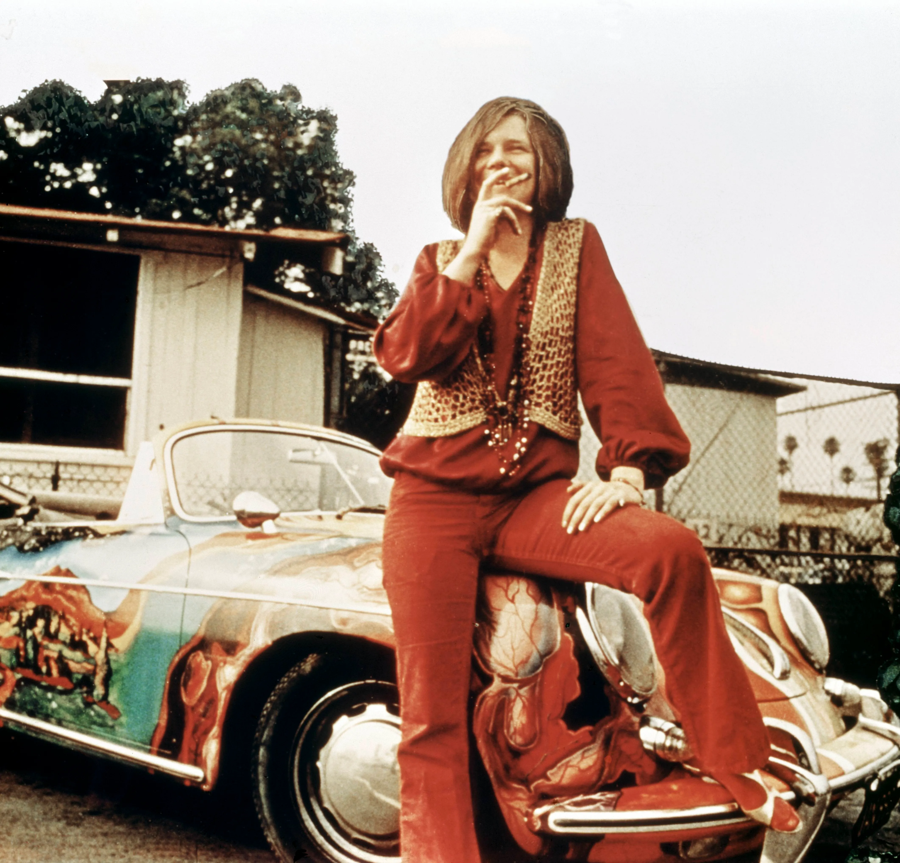

January 19, 1943 — October 4, 1970
"Don't compromise yourself. You're all you've got."
— Janis Joplin
Janis Lyn Joplin was born on January 19, 1943, in Port Arthur, Texas, into a middle-class family. From childhood she was an outsider — intellectually advanced, artistically inclined, and openly defiant of the rigid social norms of small-town Texas. She was bullied relentlessly, called ugly and freakish, and retreated into folk music, Odetta records, and the Beats.
She hitchhiked to San Francisco in the early 1960s, drawn by the counterculture and the music scene. Her first stint in the city ended badly — an amphetamine addiction forced her to return home to Texas, where she briefly tried to lead a conventional life before music pulled her back.
Janis Joplin was one of the most powerful and distinctive voices in rock history — raw, wailing, deeply blues-inflected, and utterly unlike anything else of her era. She opened the door for women in rock who dared to be aggressive, imperfect, and uncontrolled. Her influence extends through artists as varied as Melissa Etheridge, Pink, and Courtney Love.
She died on October 4, 1970, at the Landmark Motor Hotel in Hollywood, from a heroin overdose — just sixteen days after Jimi Hendrix. She was alone. A posthumous album, Pearl, released in 1971, became her greatest commercial success and featured her iconic version of "Me and Bobby McGee."
In 1966, Joplin returned to San Francisco and joined Big Brother and the Holding Company. Her performance at the Monterey Pop Festival in 1967 — on the same stage as Jimi Hendrix and The Who — was a revelation. Critic Robert Christgau called it one of the greatest performances he had ever witnessed. She was suddenly famous, and the music world was not prepared for her.
She left Big Brother in 1968 to form the Kozmic Blues Band, then the Full Tilt Boogie Band. She was recording Pearl when she died — one track remained unfinished ("Buried Alive in the Blues," left without a vocal). The album that emerged was a testament to a voice at its peak.